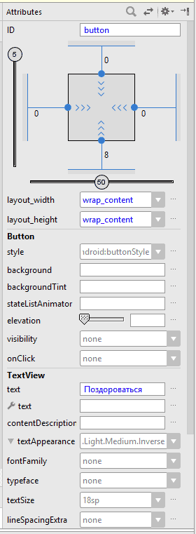
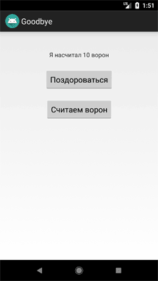

Счётчик ворон
В прошлом уроке Hello Kitty мы использовали ImageButton. Сегодня будем работать с обычной кнопкой. В режиме Design подведите курсор к компоненту Button и перетащите его на форму. В результате ваших действий на форме появится стандартная кнопка с настройками по умолчанию. В правой части экрана у вас имеется окно Attributes, в котором вы можете настроить необходимые свойства для кнопки. По умолчанию студия присвоит значение button атрибуту ID, который идёт самым первым. Если временно переключиться в режим Text, то увидите, что на самом деле атрибут имеет значение @+id/button. Если в вашем приложении будет много кнопок, то студия будет генерировать имена button2, button3 и т.д. Не используйте подобные идентификаторы, а сразу давайте им говорящие имена - button_name, button_food. Я пока оставил имя button. Атрибуту Text присвойте текст Поздороваться. Будет отлично, если вы добавите этот текст через ресурсы. В учебных примерах я буду использовать текст прямо в свойствах для экономии места, но вы должны привыкать писать код правильно.

Если вы создавали новый проект на основе шаблона Empty Activity, то там уже был компонент TextView с текстом Hello, World. Компонент TextView является текстовой меткой для вывода текста, который нельзя редактировать. В метке будем выводить приветствие после щелчка кнопки. В окне свойств удаляем текст из свойства Text, чтобы в текстовой метке ничего не было. Проследите, чтобы у него был идентификатор. Если в окне свойств ничего нет, то добавьте свой идентификатор, например, textView (в текстовом режиме @+id/textView).
Настройте взаимное расположение компонентов по своему желанию. Будем считать, что интерфейс программы готов - у нас есть кнопка для нажатия и текстовая метка для вывода сообщений.
Откройте файл класса MainActivity и в методе onCreate() напишите код.
override fun onCreate(savedInstanceState: Bundle?) {
super.onCreate(savedInstanceState)
setContentView(R.layout.activity_main)
val textView: TextView = findViewById(R.id.textView)
val button: Button = findViewById(R.id.button)
button.setOnClickListener {
textView.text = "Hello Kitty!"
}
}
Этот код вам уже знаком по предыдущему занятию. Если вы набирали текст самостоятельно, то у вас всё получится. Если просто скопировали и получили ошибки, то разбирайтесь сами. Я лентяям не помогаю.
Запускаем проект и нажимаем на кнопку, чтобы увидеть результат. Можете изменить текст по своему желанию, например, на Ты кто такой? Давай, до свидания!, но это сообщение будет выглядеть мягко говоря, странным.
Полный текст кода.
// Если этот код работает, его написал Александр Климов,
// а если нет, то не знаю, кто его писал.
package ru.alexanderklimov.counter
import android.os.Bundle
import android.widget.Button
import android.widget.TextView
import androidx.appcompat.app.AppCompatActivity
class MainActivity : AppCompatActivity() {
override fun onCreate(savedInstanceState: Bundle?) {
super.onCreate(savedInstanceState)
setContentView(R.layout.activity_main)
val textView: TextView = findViewById(R.id.textView)
val button: Button = findViewById(R.id.button)
button.setOnClickListener {
textView.text = "Hello Kitty!"
}
}
}
Альтернативные варианты
Существуют альтернативные варианты для обработки щелчка кнопки, которые могут встретиться вам в интернете. Со временем вы сами выберите удобный вам стиль.
Например, кнопку и метку можно объявить стандартным Java-способом через метод findViewById() и затем подключать слушатель к кнопке.
val button = findViewById<Button>(R.id.button)
// или
val button: Button = findViewById(R.id.button)
// стандартный способ, студия предложит сконвертировать в лямбду-выражение
button.setOnClickListener(object: View.OnClickListener {
override fun onClick(v: View?) {
textView.text = "Hello Kitty!"
}
})
// тоже java-стиль. редко используется
button.setOnClickListener(this::clickEvent)
private fun clickEvent(view: View){
val textView = findViewById<TextView>(R.id.textView)
textView.text = "Hello Kitty!"
}
На самом деле Java-стиль в Kotlin практически никто не использует. А вот ещё пара примеров для Kotlin.
// у обработчика щелчка есть параметр v, который можно использовать для доступа к самой кнопке
button.setOnClickListener({ v ->
textView.text = "Hello Kitty!"
v.setBackgroundColor(Color.RED)
})
// параметр v можно не указывать явно,
// так как есть специальное ключевое слово it для этих целей
button.setOnClickListener {
textView.text = "Hello Kitty!"
it.setBackgroundColor(Color.YELLOW)
}
Новички на первых порах часто делают элементарную ошибку - помещают код работы с компонентами до метода setContentView(). Запомните, сначала нужно вывести шаблон (R.layout.activity_main), а только потом можно работать с кнопками, текстовыми полями, переключателями и т.д. В нашем случае используется отдельный метод для кнопки, который формируется после метода setContentView().
Добавьте в проект новую кнопку и разместите под первой кнопкой. Подправьте несколько атрибутов, например, так.
<Button
android:id="@+id/button_сounter"
... другие атрибуты
android:text="Считаем ворон" />
Я поменял для кнопки текст и идентификатор, а также некоторые параметры, отвечающие за положение кнопки на экране. Переключитесь в графический режим и посмотрите, как выглядит кнопка.
Снова открываем файл MainActivity.kt и пишем следующий код сразу после объявления класса и до метода onCreate():
private var counter: Int = 0
В методе onCreate() после кода для первой кнопки пишем:
button_counter.setOnClickListener {
textView.text = "Я насчитал ${++counter} ворон"
}
Ещё раз напоминаю, не копируйте текст со страницы, а вводите текст вручную. Так вы быстрее освоите программирование, кроме того научитесь пользоваться системой подсказок и уменьшите количество опечаток.
В этом примере мы создали дополнительную переменную-счётчик counter, которая будет содержать число подсчитанных ворон. После создания мы сразу её инициализировали.
В обработчике щелчка мы увеличиваем значение счётчика через оператор инкремента ++, который ставим перед переменной. Попробуйте разместить оператор после переменной и посмотреть на результат, так вы поймёте разницу от местоположения оператора у переменной.
Запускаем приложение и начинаем щёлкать по кнопке. При каждом щелчке счётчик counter будет увеличиваться на единицу и эта информация будет отображаться на экране.
